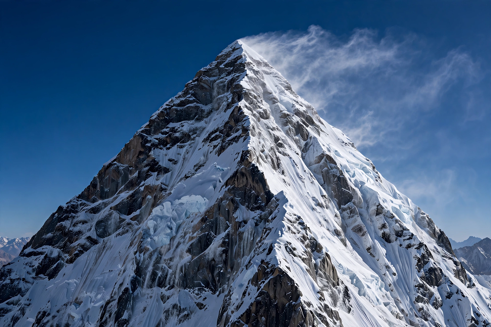

Eight-thousander

[Image: Photograph of K2 in winter, a steep pyramid of snow and rock]
The eight-thousanders are the 14 mountains on Earth that rise more than 8,000 metres (26,247 ft) above sea level. All lie in the Himalayan and Karakoram ranges of Asia, and all are widely considered among the most dangerous climbs in mountaineering, in part because of the effects of extreme altitude in the so-called death zone.
The fourteen peaks
The list comprises Everest (8,849 m), K2 (8,611 m), Kangchenjunga (8,586 m), Lhotse (8,516 m), Makalu (8,485 m), Cho Oyu (8,188 m), Dhaulagiri I (8,167 m), Manaslu (8,163 m), Nanga Parbat (8,126 m), Annapurna I (8,091 m), Gasherbrum I (8,080 m), Broad Peak (8,051 m), Gasherbrum II (8,035 m) and Shishapangma (8,027 m). Heights are as most recently surveyed for Everest; others vary slightly between sources.
Climbing history
Annapurna I was the first eight-thousander climbed, in 1950 by Maurice Herzog's French expedition; Everest followed in 1953. Reinhold Messner was the first person to climb all fourteen, completing the set in 1986 — and did so without supplementary oxygen.